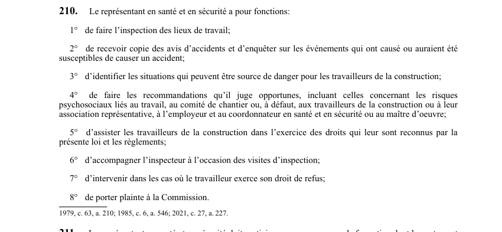

art-210-LSST : les 8 fonctions du représentant
Cahier de charges du représentant en santé et en sécurité sur un chantier : 8 fonctions, du terrain jusqu'à la plainte à la Commission.
- Terrain : inspecter les lieux de travail (par. 1°) et identifier les situations pouvant être source de danger pour les travailleurs de la construction (par. 3°).
- Accidents : recevoir copie des avis d'accidents et enquêter sur les événements qui ont causé ou auraient été susceptibles de causer un accident (par. 2°).
- Recommandations, y compris sur les risques psychosociaux liés au travail (par. 4°), au comité de chantier ou, à défaut, aux travailleurs, à leur association représentative, à l'employeur, au coordonnateur ou au maître d'oeuvre.
- Accompagnement : assister les travailleurs dans l'exercice de leurs droits (par. 5°) et accompagner l'inspecteur lors des visites (par. 6°).
- Escalade : intervenir dans les cas de droit de refus (par. 7°) et porter plainte à la Commission (par. 8°).
Visé : représentant en santé et en sécurité · Nature : obligation
🌐 LegisQuébec · 📄 PDF officiel (page 59)
Texte officiel
Le représentant en santé et en sécurité a pour fonctions:
1° de faire l’inspection des lieux de travail;
2° de recevoir copie des avis d’accidents et d’enquêter sur les événements qui ont causé ou auraient été susceptibles de causer un accident;
3° d’identifier les situations qui peuvent être source de danger pour les travailleurs de la construction;
4° de faire les recommandations qu’il juge opportunes, incluant celles concernant les risques psychosociaux liés au travail, au comité de chantier ou, à défaut, aux travailleurs de la construction ou à leur association représentative, à l’employeur et au coordonnateur en santé et en sécurité ou au maître d’oeuvre;
5° d’assister les travailleurs de la construction dans l’exercice des droits qui leur sont reconnus par la présente loi et les règlements;
6° d’accompagner l’inspecteur à l’occasion des visites d’inspection;
7° d’intervenir dans les cas où le travailleur exerce son droit de refus;
8° de porter plainte à la Commission.
Texte de l’article 210 LSST, extrait de la couche texte du PDF officiel (page 59), sans OCR ni retouche. La capture ci-dessous et le PDF font foi.
{kind=link}

Toucher l'image pour l'agrandir🔗 Ouvrir a cette page : LSST.pdf : page 59 · texte a jour au 26 mars 2024
- Le temps consacré aux par. 2°, 6° et 7° est libéré sans plafond ; celui des 5 autres fonctions est fixé par règlement (art. 212).
- Les par. 4° (risques psychosociaux) et 8° résultent de 2021, c. 27, a. 227.
Voir aussi
- art. 208 : application articles représentants comité · obligation : les articles 76, 77 et 81 s'appliquent, compte tenu des adaptations nécessaires, aux représentants en santé et en sécurité et aux représentants des associations représentatives qui font partie du comité de chantier.
- art. 209 : désignation représentant santé sécurité · obligation : lorsque les activités sur un chantier occuperont simultanément au moins 10 travailleurs de la construction, un représentant en santé et en sécurité doit être désigné dès le début des travaux à la majorité des travailleurs présents ; à défaut.
- art. 211 : formation représentant santé sécurité · obligation : le représentant en santé et en sécurité doit participer aux programmes de formation dont le contenu et la durée sont déterminés par règlement ; il peut s'absenter sans perte de salaire et les frais d'inscription, de déplacement et de séjour sont assumés par la Commission.
- art. 212 : temps exercice fonctions représentant · faculté : le représentant en santé et en sécurité peut s'absenter le temps nécessaire pour exercer les fonctions des paragraphes 2°, 6° et 7° de l'article 210 ; la Commission fixe par règlement le temps consacré aux autres fonctions.
- 🔧 Modifié par : LMRSST · Article modificateur de la LMRSST.
- ↑ Loi : LSST
Pages qui pointent ici (10)
- art-173.1-LSST : support technologique imposé par règlement Recueil législatif
- art-208-LSST : protections des membres du comité Recueil législatif
- art-209-LSST : représentant dès 10 travailleurs Recueil législatif
- art-211-LSST : formation du représentant santé sécurité Recueil législatif
- art-212-LSST : temps de libération du représentant Recueil législatif
- art-212.1-LSST : représentant plein temps chantier majeur Recueil législatif
- art-213-LSST : droits importés du représentant prévention Recueil législatif
- art-214-LSST : représentant réputé au travail Recueil législatif
- art-227-LMRSST : modifie l'art. 210 LSST Recueil législatif
- LMRSST : Chapitre II : Modifications à la LSST Recueil législatif